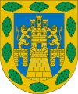

Meksyk
Ogólne informacje
Historia
Dzielnice
Mapa
Informacje ogólne
Meksyk – stolica i dystrykt federalny Meksyku, położona na wyżynie leżącej w środkowej części kraju.
Zajmuje powierzchnię 1479 km². Populacja miasta wynosi 8 720 916 mieszkańców, natomiast obszar metropolitalny zamieszkuje 19 231 829 osób .
Szacuje się, że całe megalopolis liczy ok. 22–25 mln mieszkańców i jest uznawane za czwartą pod tym względem po Tokio, Seulu i Dżakarcie aglomerację miejską świata.
Region miasta odznacza się także jednym z największych i najszybszych przyrostów liczby ludności.
Godło miasta

| Państwo | Meksyk |
| Powierzchnia | 1479 km² |
| Nr kierunkowy | (+52) 55 |
| Gęstość zaludnienia | 6030,2 os./km² |
| Populacja | 8 918 653 |
| Kod pocztowy | 01000–16999 |
Historia
Meksyk został założony w XIV w. przez Azteków ( Tenochtitlán ). W krótkim okresie stał się ośrodkiem Imperium Azteków.
Współczesny Meksyk jest centrum politycznym, kulturalnym i gospodarczym Federacji Meksykańskiej. Mimo że kiedyś był znany jako "Miasto pałaców" i miejsce z najbardziej "przejrzystym powietrzem", gwałtowna urbanizacja i rozwój przemysłowy doprowadziły do przeludnienia i zanieczyszczenia środowiska. W dalszym ciągu można tu znaleźć przykłady współczesnej i kolonialnej architektury oraz liczne parki i muzea. Historyczne centrum miasta i leżące w jego pobliżu pływające ogrody Xochimilco zostały wpisane na listę Światowego Dziedzictwa Kultury UNESCO w 1987 . Do tej listy w 2004 roku dodano dom i pracownię architekta Luisa Barragána , a w 2007 roku również kampus uniwersytecki przy Universidad Nacional Autónoma de México.
Dzielnice
- Álvaro Obregón
- Azcapotzalco
- Benito Juárez
- Coyoacán
- Cuajimalpa
- Cuauhtémoc
- Gustavo A. Madero
- Iztacalco
- Iztapalapa
- La Magdalena Contreras
- Miguel Hidalgo
- Milpa Alta
- Tláhuac
- Tlalpan
- Venustiano Carranza
- Xochimilco
Mapa miasta Meksyk
Powrót na górę